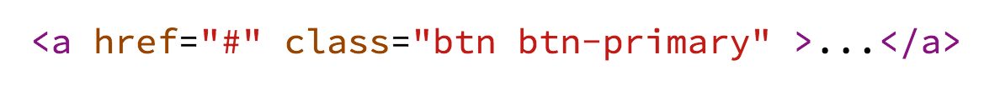

框架的功能類似於基礎設施，與具體的軟體應用無關，但是提供並實現最為基礎的軟體架構和體系。軟體開發者通常依據特定的框架實現更為複雜的商業運用和業務邏輯。這樣的軟體應用可以在支援同一種框架的軟體系統中運行。
簡而言之，框架就是制定一套規範或者規則（思想），大家（程式設計師）在該規範或者規則（思想）下工作。或者說使用別人搭好的舞台來做編劇和表演。
你可以想像成：
“使用框架來寫程式” 就代表：你將別人寫到一半的程式拿來繼續下去。
而程式有份非常多種，因此也當然有不同用途的框架了。 例如：
現在，我們來試著將 Bootstrap 加到我們的專案中。
bootstrap.css，將他上傳到你的網站中的 css 資料夾。<head> 區塊中嵌入 bootstrap.css:
<link href="css/bootstrap.css" rel="stylesheet"><a href="...">我的臉書頁面</a>。看看他長什麼樣子。btn btn-primary，再觀察一下發生了什麼事。
Bootstrap 按鈕樣式：http://getbootstrap.com/css/#buttons